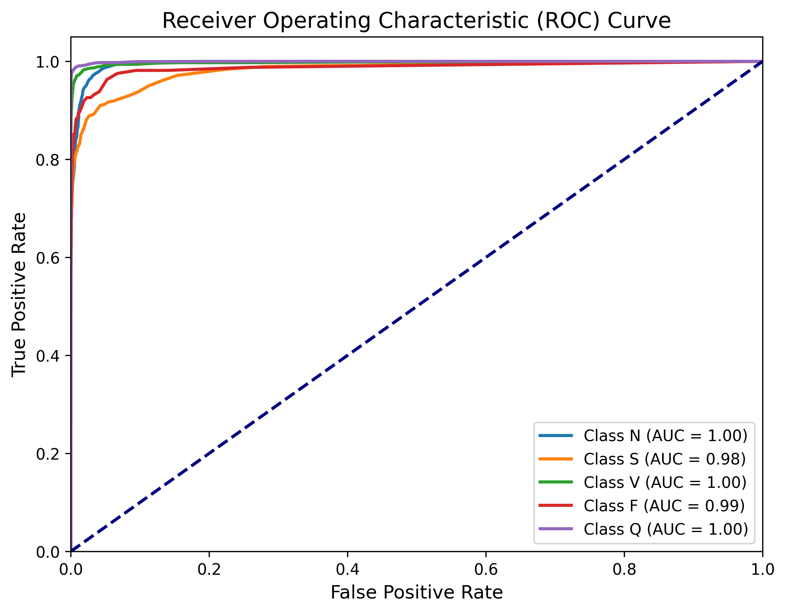
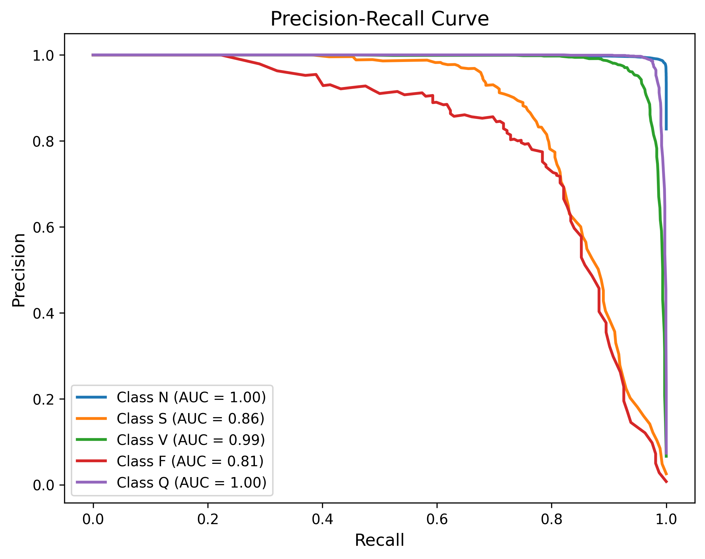
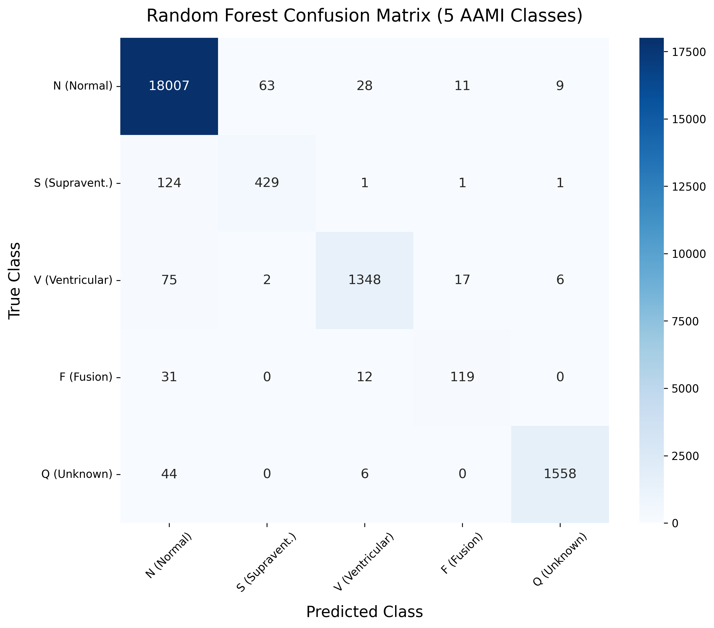
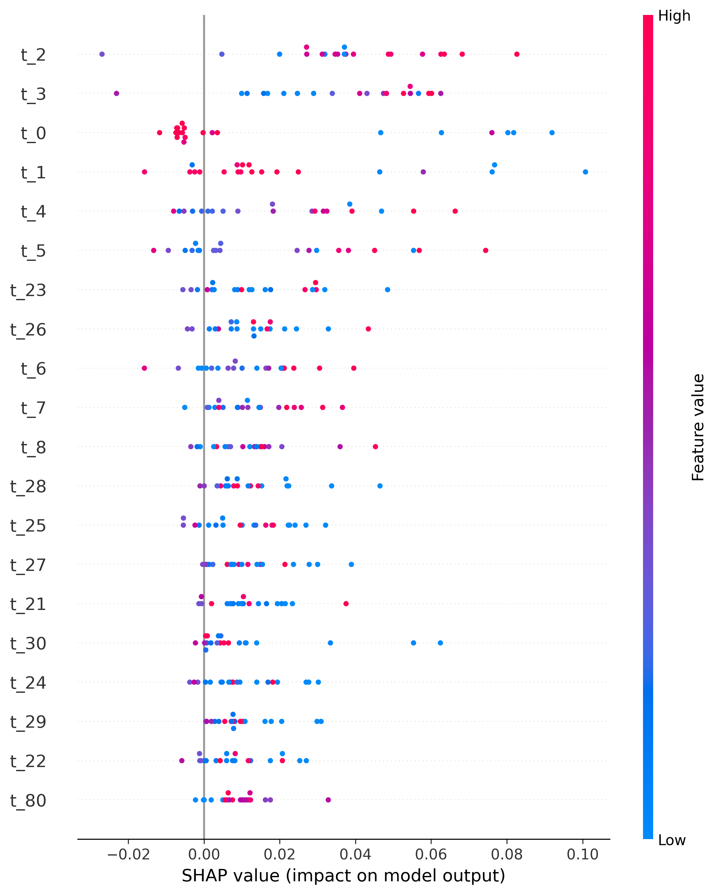

1. Data Extraction: The MIT-BIH dataset provides 187 time-step features representing a single heartbeat.
2. Multi-Class Mapping: We mapped the annotations to the 5 AAMI standard classes (N, S, V, F, Q).
3. Feature Scaling: Applied StandardScaler fitted solely on the training data to prevent information leakage.
4. Class Balancing: Applied SMOTE (Synthetic Minority Over-sampling Technique) to balance minority anomalies (S, V, F, Q) against the majority Normal (N) class.
5. Model Training: Trained our primary Random Forest model on the balanced dataset.
Moving beyond simple "accuracy" (which is misleading for imbalanced datasets), the Random Forest model achieved exceptional results across all strict clinical evaluation metrics after applying SMOTE:
Accuracy
Macro Precision
Macro Sensitivity (Recall)
The high Sensitivity and Precision demonstrate that the model successfully isolates rare anomalies (such as Fusion beats) rather than just guessing "Normal" every time.
The Receiver Operating Characteristic (ROC) curve and Precision-Recall (PR) curve demonstrate the model's high true positive rate across all 5 classes simultaneously using a One-vs-Rest (OvR) approach.

(Run main.ipynb and save roc_curve.png to the Model folder to see it here)');">
(Run main.ipynb and save pr_curve.png to the Model folder to see it here)');">The 5x5 Confusion Matrix breaks down exactly where the model succeeded and where minor class-confusion occurred.

(Run main.ipynb and save confusion.png to the Model folder to see it here)');">To ensure clinical trust, we utilize SHAP (SHapley Additive exPlanations) to decode the model's decision-making process. The summary plot below illustrates exactly which milliseconds (time-steps) of the ECG waveform pushed the model to predict a Ventricular Ectopic (Class V) anomaly.
Key Clinical Insights:
• Time-step 2 (t_2): A high signal (red spike) here strongly drives the model towards a Class V prediction.
• Time-step 0 (t_0): A low signal (blue dip) at the very start of the heartbeat is a major indicator of a Class V anomaly.

(Run the SHAP cell in main.ipynb and save shap_plot.png to the Model folder to see it here)');">